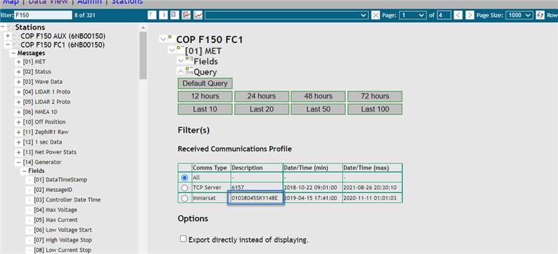

Root Cause Analysis
This short quiz will guide you through the next steps once you have identified a potential problem within your daily buoy checks.
Which Buoy is this regarding?
Operator Name:
Where have you encountered a problem?
Check Camera Images
Log onto AXTS APS and visually inspect the buoy. Can you see any visible damage or other obvious issues? (ie. blocked lidar, birds etc, broken mast)
If you can see damage on the buoy, what appears to be wrong?
Next
Check for an existing Case
We have identified a problem with the buoy system. Let's double check and see if a case already exists for this problem.
Please go Here to verify if a case exists.
If no case exists:
Create a Case
Make sure all completed interventions are recorded in the intervention log located:
At This Link
Go Back Save Input
Is there data available from the other WTG?
Is the other WTG showing power being produced?
Load the buoy's location on Windy.com.
What is the forecasted wind speed in meters per second? (m/s)
Load the buoy's camera images. Are both WTGs present and moving in the same direction?
Go Back Next
Continue Monitoring
It appears that the data is within a reasonable threshold. Continue monitoring for this issue to see if it persists. Creating a case is not needed at this time.
Go Back SAVE INPUT
Is there data available for both solar panels?
Is the other solar panel producing power?
Load the buoy's location on Windy.com.
Is the weather forecasted to be sunny? Is it also daytime there?
Are both panels using the same MPPT?
Navigate to SmartWeb, if both panels use one MPPT, there will only be one MPPT between FC1 and FC2.
IF YES: check total average power in Net Power Stats.
Is total average power higher than MPPT reading?
Go Back Next
Are there messages coming into SmartWeb?
Does the generator kick on when it is supposed to?
Go Back Next
Are there messages coming into SmartWeb?
Does the fuel cell kick on when it is supposed to?
Go Back Next
Generator Operations
It appears that there is an issue with the generator. Please review and follow instructions in the Generator Operations SOP, follow up with an engineer and create a case.
Go Back Next
What is the current WLS voltage reading?
What voltage was the sensor previously at?
Which compartment is the WLS in?
Go Back Next
Is the hatch reading open?
Please remember to check the buoys MS teams channel to verify there is no planned maintenance scheduled for this buoy.
Additionally, please check the incident report log to verify there are no notes about the hatch being left open upon deployment.
Go Back NextHave you received more than 3 consecutive Off Position Messages in the MS Teams DAAS critical channel?
Is the WatchCircle message (Message [10] Off Position) showing 0 [Off-position] ?
Go Back Next
Download the latest GPS Coordinates
Chart the position of the buoy.
Does it appear that the buoy is outside of it's regular moored position?
Is the WatchCircle message [Off Position] showing 0 (Off-position) ?
Go Back Next
Investigate WatchCircle settings
Log onto DMS and look up the WatchCircle coordinates. Compare this with data from the channel regarding launch site.
If the WatchCircle is set to the incorrect location, verify the coordinates with your supervisor and update the buoy. Wait for 10 mins.
Have the off position alerts stopped coming in on the MS teams channel?
Is the WatchCircle message (Off Position) showing 0 (Off-position) ?
Go Back Next
Humidity Sensor
Is the humidity sensor reporting near 100% humidity?
Is some or all of the data missing on the FTP file?
Go Back Next
Air Temp Sensor
Go to Windy.com to verify what the current air temperature is.
Is the sensor reporting incorrect temperatures for the region where the buoy is deployed?
Is the file missing completely from the FTP?
Go Back Next
Barometer
Go to Windy.com to verify what the current local air pressure is.
Is the sensor reporting incorrect pressure for the region where the buoy is deployed?
Go Back Next
Camera
NOTE: Buoys f120 & f130 do not have cameras installed.
Are camera images missing from the FTP?
Is the buoy on power savings or essentials mode?
If you are not sure, check the MS teams channel for that buoy to see if there are any updates relating to power saving or essentials mode.
Are the images available from the other camera?
Go Back NextGill
Log onto AXYS APS and visually inspect the buoy.
Can you see any visible damage?
Is the other gill missing data?
Is True Heading Data Available?
Go Back NextReview and follow instructions in the 1hz data SOP.
If the 1hz data is not ok, create a case. If the 1hz data is fine, then create a case for 10 minute processing algorithm.
Go Back NextTrue Heading
If True Heading Data is not available review and follow instructions in the SOP ATI-FLT-019 - True Heading Alert
When Complete, please press "Next" to create a case.
Go Back NextRAW
Log onto AXYS APS and visually inspect the buoy. Can you see any visible damage?
Is Gill Data Available?
Is True Heading Data Available?
Is the IPC Online?
Go Back NextIf the Windcube raw file is missing data (greater than 5 consecutive full rows of NaNs), or if the .sta file is missing bring it to the attention of an engineer before completing a system reboot as per SOP ATI-FLT-017 - Power Reset Procedure.
Log onto the IPC via teamviewer.
Are the files on the buoy?
Go Back Next
Check Communications
We are going to log on to SmartWeb to do some troubleshooting with the communication channels
Check the 'status' message.
Are there messages coming in every 10 mins?
Check the 'Off-Position' message.
Are there messages coming once daily, just after midnight UTC?
Go Back Next
TCP Issue
We have identified an issue with the TCP communications. A case will need to be created; however, we want to gather some more information first.
Check through other TCP messages, such as MET, generator, LiDar power...
How many messages are missing?
Check the other FC. Are there messages missing on the other FC also?
Go Back Next
TCP Issue
We have identified an issue with the IDP communications. A case will need to be created; however, we want to gather some more information first.
Log onto SmartWeb, and navigate to the buoy that is having the Communication Issue. Locate the serial number of the IDP communication. A picture is provided below to show you where to find this number.
Once you have found this serial number, log onto the IDP communication viewer Here to check if you see communications over IDP. If you do not have this login information, contact your supervisor.
Does it appear that IDP has a connection to this buoy?
Check the other FC. Are there messages missing on the other FC also?
Go Back Next